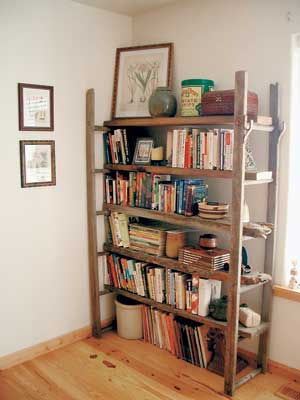
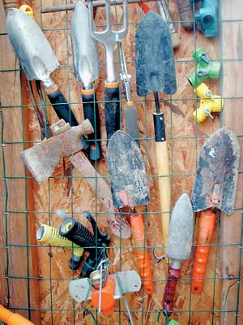
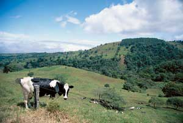

My husband and I recently bought our dream home on 20 acres. We spent so much time (and money!) working on fences, irrigation and outbuildings that, eight months later, all our books were still boxed in the garage. We were reluctant to shell out $125 for a particleboard bookshelf. Then I had a great idea: I took a weathered 25-foot wooden ladder from behind the barn and cut it into four equal lengths to make supports for two bookshelves. For the shelves, I used reclaimed wood from a barn. I left the ragged edges and the ladder hardware for effect and bolted the units to the wall for safety. I now have bookshelves that are unique and look great. They didn't cost us a dime, and I spent a great Saturday morning putting them together. Now we're considering making rustic benches and tables from the remaining barn wood to pepper the house with charm -- it should be a fun winter!
Regarding the August/September 2005 "Country Lore " tip on peeling hard-boiled eggs: I put a couple tablespoons of vinegar in the water while the eggs are boiling. The shells crack easily and usually come off in two pieces. The vinegar does not affect the taste of the eggs.
When using epoxy resin to glue porcelain or china, mix a dab of paint that's the same color as the china into the epoxy before applying. This will eliminate the shadow line you get when using clear epoxy.
When you complete a fencing project, it is always a challenge to find a use for the fencing material left at the end of a roll. I was about to tuck a small roll of vinyl-covered fencing into a corner of the garden shed, when I realized that it could be used to store small garden tools. I loosely stapled some of the 2-by-3-inch mesh fencing to the inside of the shed door frames. To store trowels and similar tools, I just poke the handles through the mesh. I used vinyl-covered garden wire to make hooks to hang items that won't fit into the mesh.
I recently went to the doctor to have my cholesterol checked. Previously, the doctor had prescribed medication to help control it. The doctor and I were both pleasantly surprised that my LDL was down 95 points and my total cholesterol was down 88 points! Then she said, "The medication is really working for you. " Well, surprise, I hadn't been taking the medication she prescribed. What I had done was make three little changes in my life -- nothing drastic or dramatic, but obviously effective.
I had always been fairly conscientious about my diet, eating balanced meals and keeping junk food to a minimum. I was less than 20 pounds over my ideal weight, and I did a modicum of exercise. Despite this semihealthy lifestyle, my cholesterol levels had been creeping up over the past 12 years.
I read everything I could find about cholesterol. I finally narrowed the success factors down to three: elimination of saturated and trans fats, increased fiber intake and regular exercise.
It was fairly easy to substitute olive oil for butter or margarine. The mild/light version does not have an oily taste; as a matter of fact, it is almost tasteless. For foods that demand a butter flavor, I add butter buds to the oil. Also, my day now starts with whole-grain cereal to which I add golden raisins and 1-percent or 2-percent low-fat milk.
These two adjustments are the only actual changes I have made to my diet. I have always eaten whole-grain bread, brown rice, plenty of vegetables and more chicken than beef. Just imagine if I hadn't!
The final lifestyle change was to exercise on a regular basis. After all these years and many attempts, I have accepted the fact that I cannot do this on my own; I must belong to a class. I exercise at least three times a week for 30 to 40 minutes each time.
So, those are my three little lifestyle changes. They are quite painless, but very effective. The bottom line is that my doctor told me that my cholesterol figures indicated I no longer needed to take medication!
We have found a new way to wrap up miles of electrical fence wire. We had an old wheeled garden-hose reel with a crank that would no longer work for the hose.
We used it to wrap up about a mile of electrical fence wire in about half the time it normally takes us. I attached one end to the spool while my husband walked the fence line and unhooked the fence from the insulators. Once he got to an end, he held a little tension on the line while I cranked it up neatly on the spool.
The wheels make it easy when we need to put the fence back up. We just roll the reel to where we need to run the fence. The wire stays neat and untangled.
I have discovered that an old chest freezer makes a good cold frame to start seeds. I place 5-gallon buckets filled with water, which act as thermal mass, in the bottom of the freezer. On top of the buckets, I set the trays of soil and seeds on old refrigerator shelves. I tape plastic sheeting to the top back edge of the freezer, under the lid. For the front and sides, I fold over the sheeting to make sleeves to hold metal pipes that keep the plastic from blowing off. When it's warm and sunny, I open the freezer lid and fold the plastic back. When it's near freezing, I reposition the plastic and close the freezer lid. Rain has filled about a third of the freezer, but I have left it for additional thermal mass. The extra humidity seems to help the sprouts, and I don't have to carry water from the faucet to water the flats.
You can get a new garden for free by organizing a seed/plant swap. If you don't have interested friends or neighbors, you can contact churches, schools, Girl Scouts, Boy Scouts and other organizations. Also, local garden clubs may have seed and plant swaps in the spring that you can join.
When I get the urge to start a new flower bed or fill in the bare spots, I first check what I have in stock -- this goes for inside and outside plants. Perennials and spring and summer bulbs can easily be divided; daffodils, crocuses and day lilies are fast multipliers. Rooted cuttings and saved seeds also are great to trade. This way, I usually get new varieties to add to my collection at home.
Herbs such as sage, thyme and chives can be dug up and overwintered indoors. Divide them in spring, keep some and swap the others. Houseplant cuttings are always in demand. Unusual plants are more desirable and make better bargaining tools. Don't forget to include compost in your bartering endeavors. Many gardeners don't have room or take time to make compost. I have found that a bag or two of good compost can be worth its weight in free plants!
Here are some tips for when you are ready to shop for land, based on the experiences of myself and my wife. With persistence, planning and just a touch of compromise, you can find country property that will fit your needs for a lifetime.
If so, we would like to hear your thoughts on why you love your woodstove, 300 words or less, please. Send your woodstove accolades to: letters@MotherEarthNews.com or Woodstove; Mother Earth News; 1503 SW 42nd St.; Topeka, KS 66609.
Have you learned some trick of the trade, secret formula or way to work more sustainably around the homestead? We'll pay you $25 to $50 for each letter we publish. Send your info, with photos please, to "Country Lore " at Mother Earth News; 1503 SW 42nd St.; Topeka, KS 66609, or to letters@MotherEarthNews.com.
|
 Mariah Zabriskie Mariah Zabriskie's rustic bookshelf, made from an old ladder. |
 Charles McKelley Charles McKelley made this nifty tool holder out of extra fencing wire. |
 Craig Idlebrook Craig Idlebrook offers advice on how to investigate land before buying. |